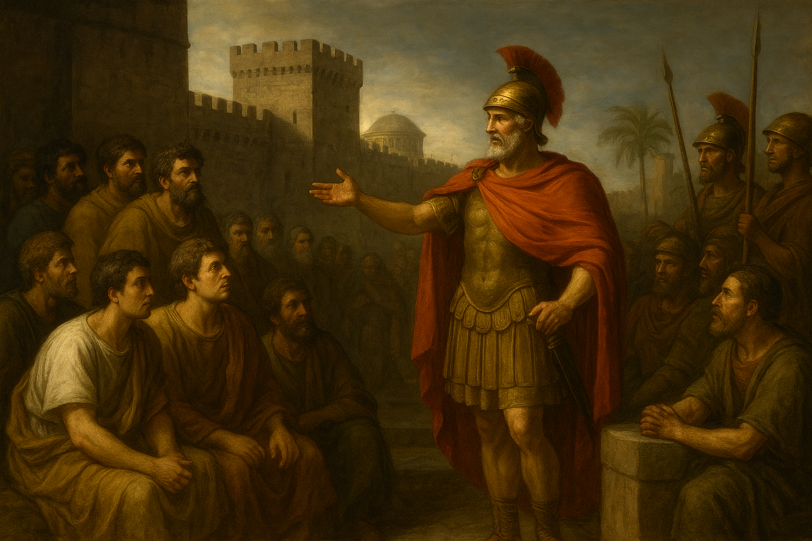

Plutarch's biography of Quintus Fabius Maximus, known as "Cunctator" or "The Delayer," is the story of a Roman statesman and general who, in a time of existential crisis, had the courage to fight a war on his own terms. In a world that celebrated aggressive military action, Fabius was a man of prudence, patience, and unwavering resolve. Plutarch presents him as a figure of deep-seated Roman virtue, a man of simple tastes and firm convictions who, despite public ridicule and political opposition, saved Rome from the brink of annihilation at the hands of Hannibal.
Fabius's moment came after Rome's catastrophic defeat at the Battle of Lake Trasimene, where a massive Roman army was annihilated by Hannibal. In this time of panic and despair, Fabius was elected dictator. He immediately adopted a strategy that was as revolutionary as it was controversial: he refused to engage Hannibal in a pitched battle. Instead, he followed the Carthaginian army, shadowing their movements, harassing their supply lines, and using the rugged Italian terrain to his advantage. This strategy, known as Fabian tactics, was one of attrition and delay. He knew that Hannibal's army, far from home, could not sustain itself indefinitely, and he correctly calculated that time was on Rome's side.
Plutarch describes the public's reaction to Fabius's strategy with vivid detail. The Roman people, eager for a decisive victory, scorned him as a coward. His own generals, particularly his cavalry commander Minucius, chafed at his caution and openly defied his orders. In one particularly telling incident, Minucius engaged Hannibal and achieved a minor victory, which earned him the adulation of the people and led to him being granted equal command with Fabius. However, as Fabius had predicted, Minucius was later drawn into a trap and only saved from total destruction by the timely intervention of Fabius's main army. This episode cemented Fabius's reputation as a man of foresight and demonstrated the wisdom of his patient approach.
Plutarch's biography of Fabius concludes with the triumphant vindication of his strategy. Though his command was temporary, his tactics became the standard for Rome in the later stages of the war. After the devastating defeat at Cannae, where a more aggressive Roman army was utterly destroyed, the Romans finally understood the wisdom of Fabius's caution. He became known as "the Shield of Rome," a man who, by not fighting, had saved the Republic. Fabius’s life, as told by Plutarch, is a profound and timeless lesson on the virtues of patience, self-control, and the courage to stand firm in one's convictions, even in the face of widespread public condemnation.